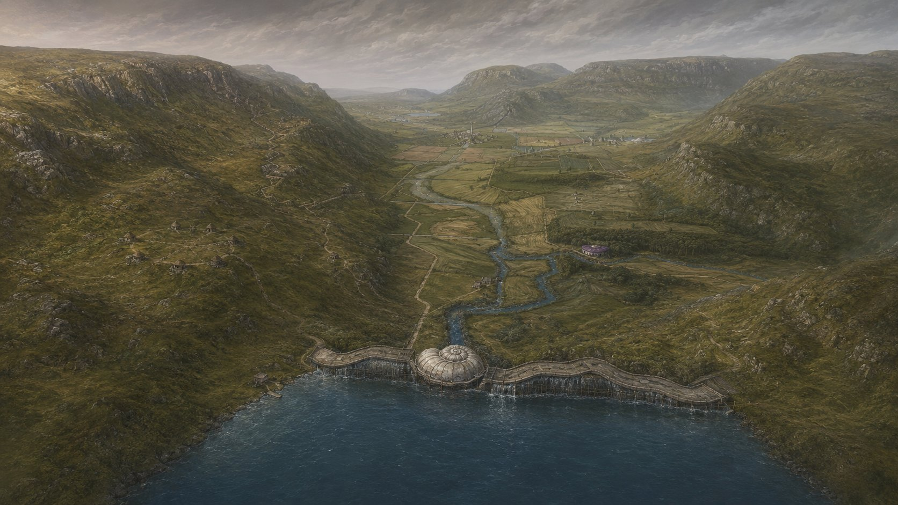
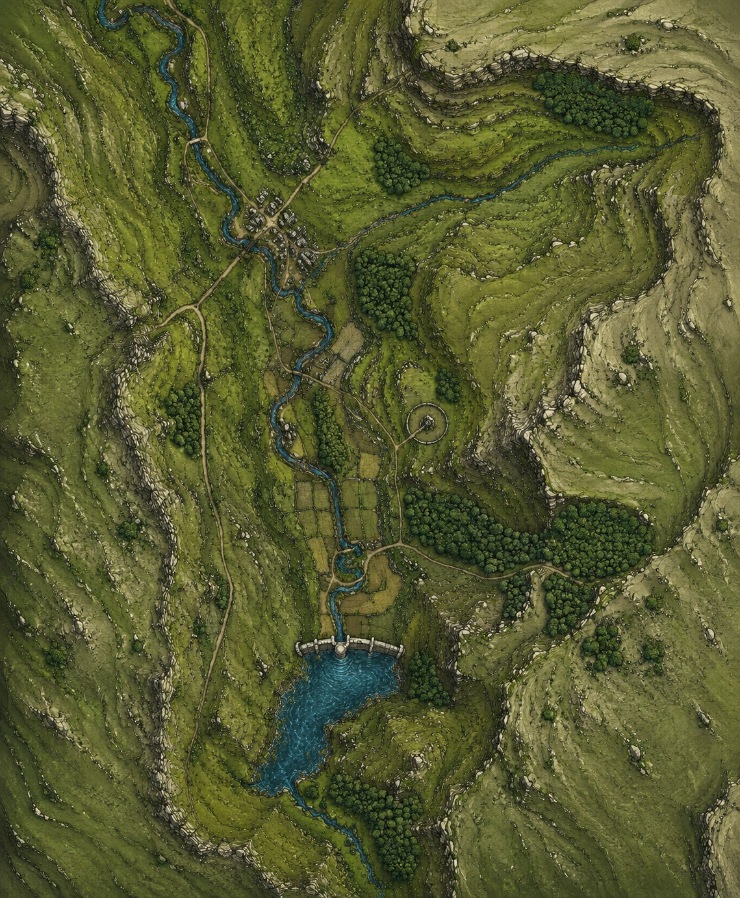

Hotspot positions are eyeballed against the rendered views, not surveyed — expect them to sit close to, not exactly on, the feature they mark.

Orientation map (separate render — approximate)

Hotspot positions are eyeballed against the rendered views, not surveyed — expect them to sit close to, not exactly on, the feature they mark.

Orientation map (separate render — approximate)
Click anywhere on the map, or choose a place from the browser, to confirm where you are and see what's happening there right now.